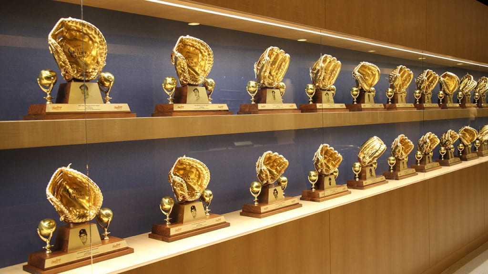
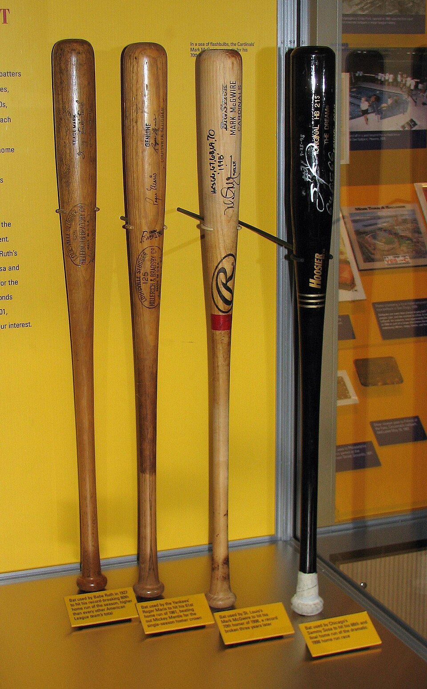

Museo Deportivo
Menú
Inicio
Exposiciones
Horario
Ubicación
Entradas
Contacto
Regresar a exposiciones
Galería de Béisbol: historia del diamante
Da clic en una imagen para verla más grande.

Guantes de oro (Trofeo para mejores beisbolistas).

Colección de bates de madera de distintas épocas.
Cerrar